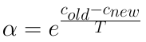

anneal: Short-range Direct Search Heuristic used to improve solution
Created on May 12 2017
Implementation of simulated annealing algorithm. Can be used in place of Nelder-Mead for Local Search.
Contents
Function I/O
Input: * oldsolution: Candidate solution parameters to conduct local search.
- oldcost: The objective value of the old solution.-
- T: Starting temperature.
- alpha: Geometrical temperature decay rate.
- alphatime: Number of iterations required for each temperature.
- T_min: Minimum temparature
Output:
- oldsolution = Improved candidate solutions.
- cost = fitness of the new solution, outputed to conserve function calls
The advantage of this approach is that the entire database does not need to be passed to the function, only the specific solution that needs to be improved.
Parameter Considerations
- alpha will typically be between 0.99 and 0.8
- T will usually be 1.00
- alpha time can be between 100 and 1000
- T_min can be 0.01
Source Code
function [oldSolution, oldCost] = anneal(oldSolution, oldCost, T, alpha, T_min, alphaTime) while (T>T_min)
i = 1;
The algorithm will stop operation when the minimum temperature is reached.
while (i<=alphaTime)
p = randperm(length(oldSolution),2);
solution = oldSolution;
solution(p(1))= oldSolution(p(2));
solution(p(2))= oldSolution(p(1));
Generate random neighboring solution from current solution by swapping 2 variables.
cost = objFun(solution);
Fitness obtained from an external script for modularity
Acceptance Probability Function

This formula calculates the chance of switching to the new solution. If new cost is lower than old cost switching will occur.
ap = exp((oldCost-cost)/T);
if ap>rand()
oldSolution = solution;
oldCost = cost;
end
i= i+1;
end
This enacts the decay in temperature.
T = T*alpha;
end